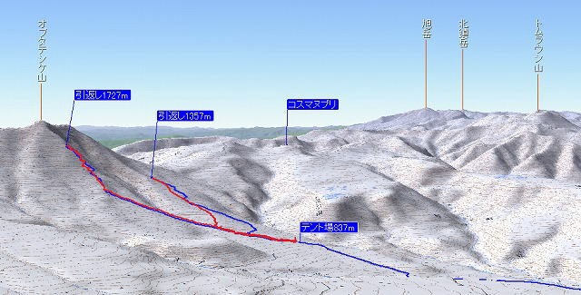
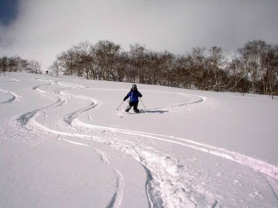

|
|||||||||||||||||||||||||||
|
|||||||||||||||||||||||||||
|
大雪山系オプタテシケ山・旭岳 |
| 実 施 日 | ２００９年２月６〜１４日 | |||
| リーダー | L.斉藤、SL.川浦 | |||
| 参 加 者 | 福士､佐藤､DR.K､丸尾 | |||
| 報 告 者 | 佐藤 | |||
| 参加者数 | 会員３名、非会員３名 | |||
| 企画力のある斉藤さんの計画に北海道でパウダーを滑りたいＤＲ.Ｋと佐藤が参加した。仙台から苫小牧へフェリーで車ごと移動。多忙な勤務医の木村さんは往復空路、佐藤は帰りのみ空路。 パウダー狙いかサミット狙いのどちらかというとパウダーが目的の隊だった。 初日、風が強く頂上へいけないつもりで出発が遅かったので時間切れで引返した。 翌日、頂上を狙うなら早朝にライトをつけて出発すべきだが、目的の大斜面は雪質が悪ので、林間のパウダー好斜面を求めてコスマヌプリ方面へ出かけた。 |
| 左の画像はコピー画像で視点を変えられません。 ＧｏｏｇｌｅＥａｒｔｈをインストールしている方は「スタート」を押してください。 ＧｏｏｇｌｅＥａｒｔｈの最初は真上からの視点です。 Ｎの付いたリング内側"Λ"にカーソルを当て左ボタンを押すと視点が傾き立体図となります。 さらに手の平マークも動かして調整してください。 残念ながら画像は残雪期のものです。 |
|
| ＧｏｏｇｌｅＥａｒｔｈのインストールはこちらから ［インストール］ | ［スタート］ |
|  |
| カシミールで作成した３Ｄ画像です。 |
| ２月６、７日 |
| ６日の午前に東京を出発。仙台港から太平洋フェリーに乗り、翌日昼頃苫小牧着。新得で木村さんを拾い、食料買出し、車のオイル交換(寒冷地用)を行った。 交流館トムラの快適なログハウスに泊まったがカメムシがゾロゾロ出て退治に追われた。 |
| A |  |
|
| 苫小牧港に仙台からフェリー到着 | 山の交流館トムラ、貸切のログハウス |
| ２月８日 |
| トノカリ林道は取水口まで除雪されている。そこに車を置き、軽い新雪をラッセルしながら林道終点まで登る。林道終点のロボット雨量計から少し登った林にテントを設営。 |
| Ａ | ||
| 除雪終了点から出発 | 重い荷物を担いで歩く。雪は軽い。 |
| ２２月９日 |
| 大雪山系は西高東低冬型気候の分かれ目で、テント場上空は晴れだが稜線は雲に覆われていて風雪だろう。オプタテシケに近づくにつれて雲の中に入ると激しい地吹雪となった。 前夜は風が強く木の枝に積もった雪が飛ばされてテントにバサバサと当たった。頂上は無理だろうとおもわれたので出発はゆっくりで、頂上までは行けなかった。天気はどう変わるか分からないと早く出発していれば頂上へ達したかもしれないが、風もつよく苦戦しただろう。 |
Ａ |
|||
| ♪吹雪も止んだ朝まだき凍ったテントを押し出でて♪ |
風が止んでやっと見えたオプタテシケ | ||
| Ａ |  |
|
| ♪いざ行こう我が友よニセカウシュペにトムラウシに♪ | ニペソツ |
| Ａ | ||
| オプタテシケが近づく | 傾斜も急になる |
| Ａ | ||
| 頂上まであと少し、風が強く時間もない、引返すことにする | スキー滑降用意、遠く十勝岳 |
| Ａ |
|
||
| 「ゴーッ！」と旋風が走る。雪は締まり雪 | 上の画像をクリックするとビデオをご覧頂けます |
| ２２月１０日 |
| 稜線にかかる雪雲から昨日よりも条件がわるいようだった。頂上から森林限界まで広がる大斜面は雪がわるいので、むしろパウダーを求めて好斜面のありそうなコスマヌプリ方面へ向かった。尾根の腹でパウダーを滑り、トラバースしてまた腹をすべることを繰り返してテント場上に出た。林間はさすがにパウダーが軽かったが少し斜度が物足りなかった。 テントを撤収し、トムラウシ温泉に寄ってから交流館トマムへ戻った。 ログハウスに荷物を置いたまま、暖房をつけたままだったのでいきなり快適だった。 夕食は鹿肉ナベであった。肉の量も多くすっかり堪能した。 |
| ＡA | ||
| 稜線は昨日以上に強風 | パウダーの斜面を求めて彷徨う |
|  | Ａ | ||
| テレマークを決めるＤＲ．Ｋ | 交流館トマムで、鹿ナベ、海鮮サラダ、ビール | ||
| ２月１１日 |
| 交流館トマムから旭岳温泉へ移動する途中でトマムスキー場に寄った。祭日の１１日でもガラガラであった。最近はどのスキー場も非圧雪斜面を用意してパウダーフリークを呼び込もうとしている。トマムは「冬山開放宣言」と称してコース外の林間滑走を許している。自ら上級者であることと危険を回避する術を持っているという宣誓書にサインすると許可される。許可証としてビプを貸してくれるのでそれを着用する。ヘルメットも着用しなければならない。それも無料で貸与してくれる。 雪が降ってから２日も経っていたが林間にはパウダーが残っていた。北海道の人は内地（？）と違いガツガツ滑らないのだろう。 夕方の飛行機で帰る木村さんをトマム駅で降ろし、旭岳温泉へ向かった。 |
| A | ||
| トマムの高層ホテル | コースの両脇も滑走可！！ |
| ２月１２日 |
| 旭岳温泉の白樺荘はユースホステル併設の宿だが改装直後で快適だ。ロープウェイと宿泊がセットになった料金設定でお願いした。 雪が降ってから３日目なので深雪は期待できなかったが、朝から降雪となり、快適なパウダーを楽しんだ。７回ロープウェイに乗り充分堪能して帰ろうとすると、ギアがＲに入ったままＤにならない。あれこれ試してもダメで、レッカー車が来て旭川まで牽引して修理することになった。 佐藤はこの日に飛行機にのるので、最終バスで旭川へ降りた |
|
|
A | カシミールの３Ｄ画像 動画とＧｏｏｇｌｅＥａｒｔｈ画像を見られます。 |
|
| 降ったばかりの新雪をオフピステで楽しむ 上の地図をクリックするとビデオをご覧頂けます |
ＧｏｏｇｌｅＥａｒｔｈへ |
| ２月１３、１４日 |
| 修理された車が旭川から戻ってくるのを待つ間、２名だけがロースウェイに乗りスキーをやった。 苫小牧から７時のフェリーに乗り翌朝仙台に到着し、高速道路で東京へ戻った。 丸尾さんはさらに新幹線で関西まで戻った。ごくろうさんでした。 |